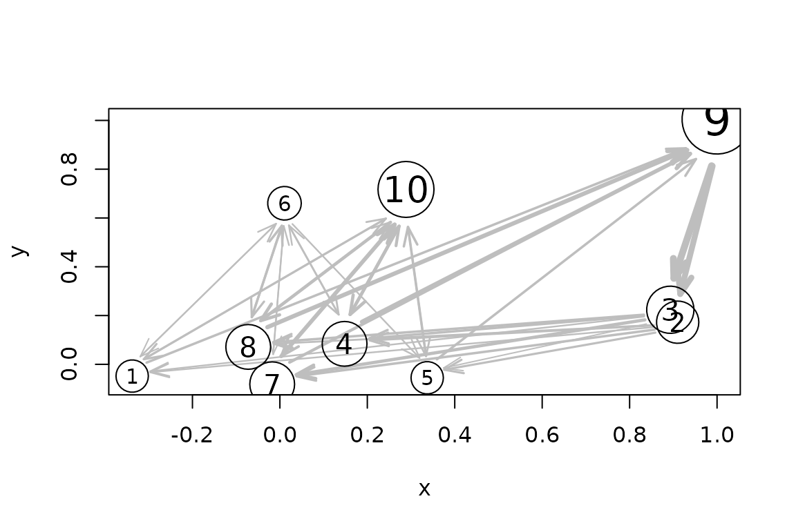

Introduction
Standard clustering methods such as k-means group observations by
similarity, but do not model the order in which observations occurred.
TRAC() adds a Markov model of transitions between the
resulting clusters. The observations must be in sequence order: their
row order determines which cluster transitions are recorded.
Cluster the observations
The bundled EMMsim_train data are an ordered sequence of
two-dimensional observations. First, apply an ordinary k-means
clustering. K-means finds the clusters without using the sequence
order.
library(rEMM)
data("EMMsim")
set.seed(1234)
cl <- kmeans(EMMsim_train, centers = 10)
cl
#> K-means clustering with 10 clusters of sizes 10, 18, 22, 20, 10, 11, 20, 20, 40, 29
#>
#> Cluster means:
#> x y
#> 1 -0.33786688 -0.04818666
#> 2 0.90991915 0.17276634
#> 3 0.89307984 0.22373658
#> 4 0.14800621 0.08396181
#> 5 0.33696494 -0.05514731
#> 6 0.01052130 0.66033766
#> 7 -0.01758605 -0.08171103
#> 8 -0.07238177 0.07141279
#> 9 0.99961897 1.00477281
#> 10 0.28847523 0.71704514
#>
#> Clustering vector:
#> [1] 1 6 4 9 2 7 10 4 9 2 7 10 7 9 3 5 10 1 9 2 5 10 1 9 2
#> [26] 1 10 8 9 3 4 10 8 9 3 7 10 5 9 3 7 10 4 9 2 8 6 8 9 3
#> [51] 7 10 8 9 3 7 10 8 9 3 7 6 5 9 2 4 10 1 9 3 8 6 4 9 3
#> [76] 8 6 8 9 2 8 10 4 9 2 5 10 5 9 3 1 6 4 9 3 7 10 5 9 3
#> [101] 4 10 4 9 3 7 6 8 9 2 4 6 7 9 2 7 10 7 9 3 8 10 4 9 3
#> [126] 4 6 1 9 3 4 10 7 9 3 8 6 5 9 3 8 10 8 9 2 4 10 4 9 3
#> [151] 7 10 7 9 2 5 10 8 9 2 7 10 7 9 3 4 10 7 9 2 8 6 8 9 2
#> [176] 1 10 1 9 2 4 10 8 9 2 7 10 8 9 3 1 10 4 9 2 5 10 4 9 3
#>
#> Within cluster sum of squares by cluster:
#> [1] 0.18532866 0.01456895 0.01624117 0.18555847 0.15694746 0.09658868
#> [7] 0.17139725 0.17097032 0.20458716 0.17402492
#> (between_SS / total_SS = 98.2 %)
#>
#> Available components:
#>
#> [1] "cluster" "centers" "totss" "withinss" "tot.withinss"
#> [6] "betweenss" "size" "iter" "ifault"Add the temporal model
Pass the clustering result to TRAC(). It uses the
k-means centers and assignments to create an EMM, then processes the
assignments in their original order to learn transitions. The result
contains both the clusters and their temporal relationships.
emm <- TRAC(cl)
emm
#> EMM with 10 states/clusters.
#> Measure: euclidean
#> Threshold: 0.4084064
#> Centroid: TRUE
#> Lambda: 0The transition graph can be visualized alongside a two-dimensional layout of the cluster centers:
plot(emm, method = "MDS")
Clusters and learned transitions from the ordered sequence.
If a different clustering algorithm is used that does not produce a
standard clustering object, then TRAC() also accepts a
vector of cluster assignments. In that case, provide the data used for
clustering so it can calculate cluster centers and distance
thresholds:
emm_from_labels <- TRAC(cl$cluster, data = EMMsim_train)
emm_from_labels
#> EMM with 10 states/clusters.
#> Measure: euclidean
#> Threshold: 0.284998
#> Centroid: TRUE
#> Lambda: 0The assignments must correspond to the rows of the data in sequence order; otherwise, the learned transitions will not represent the original sequence. The result is the same model as before when the clustering object was used.